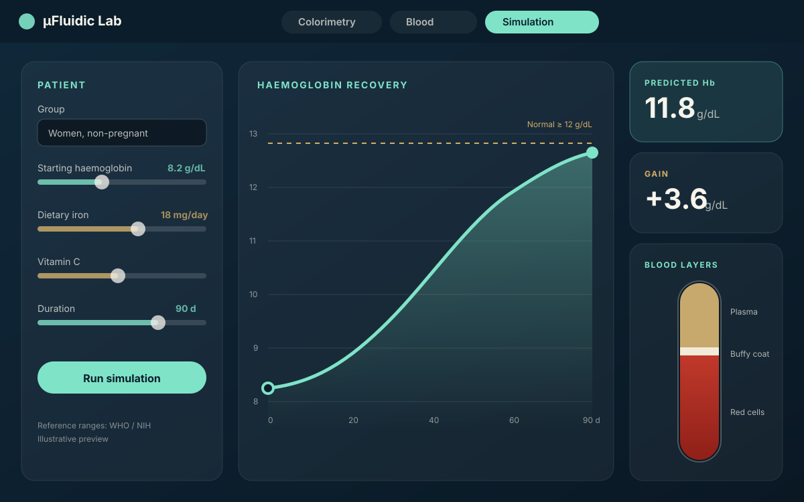
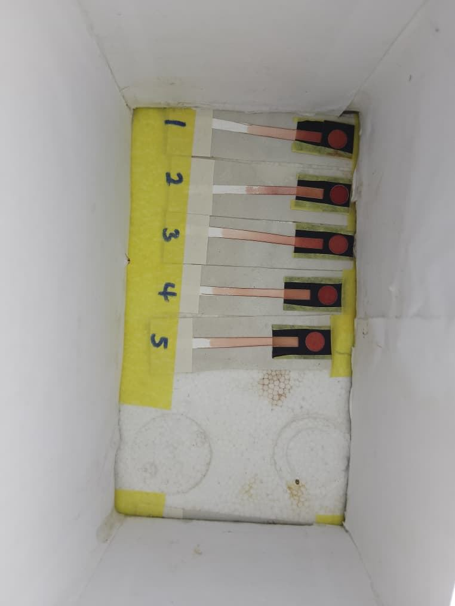
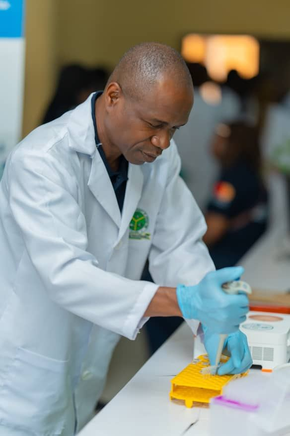
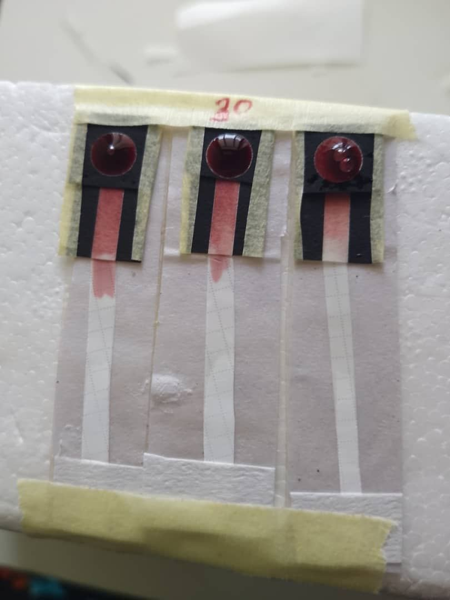
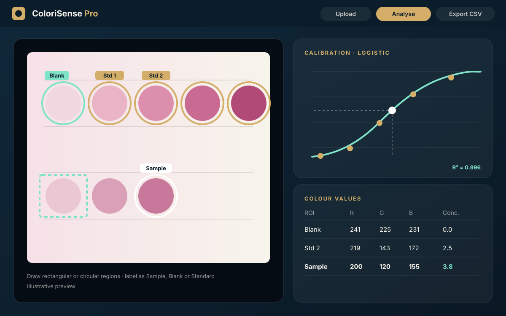

µFluidic Lab Analyser Pro
Blood analysis and anaemia recovery simulation from a photo of your test strip.
Biosensors · Diagnostics · Genomic surveillance
The research partnership of Dr A.M. Ogunmolasuyi and Dr Mary A. Adewoyin, building paper-based microfluidic, aptamer biosensors and genomic surveillance of drug resistant bacteria to bring accurate testing for malaria, neglected tropical diseases, pathogenic bacteria and other infections closer to patients.



Our software
Free-to-try web apps from our lab. Open them in any browser, no installation needed.

Blood analysis and anaemia recovery simulation from a photo of your test strip.

Image-based biosensor quantification using advanced regression models.
About M-Quadruple Biotek Ltd
M-Quadruple Biotek Ltd is a biotechnology company in Akure, Nigeria, focused on biosensor technology, diagnostic software and genomic surveillance for infectious diseases.
Advance global healthcare through groundbreaking research in biosensing technology and diagnostic solutions. Our mission
Research areas
Five connected areas, one goal: reliable diagnostics that are low-cost, low-power and simple enough to use where they are needed most.
Hands-on fabrication of colorimetric, electrochemical and molecular biosensors.
Molecular and microbiology analysis of pathogens using PCR, LAMP and RPA.
Point-of-care microfluidic devices for infectious diseases, including paper analytical devices (µPADs).
SELEX-based discovery of aptamers for therapeutic and diagnostic uses.
Technical assistance and technology for diagnostics companies.
Our team

Co-founder & CEO
Microfluidics and biosensing researcher. PhD, Rhodes University. USAID grant holder for low-cost schistosomiasis diagnostics.
Read more →
Co-founder
Molecular microbiologist working on antimicrobial resistance and microbial ecology. PhD, University of Fort Hare.
Read more →
Manager, Microsystem Prototypes
Inorganic chemist, electrochemist and nanotechnologist. PhD, Rhodes University.
Read more →Contact
Book a consultation, ask about training, equipment or our software, or discuss a research collaboration.